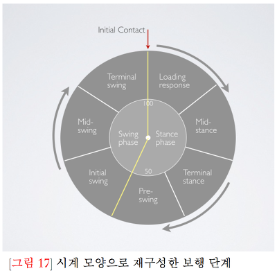
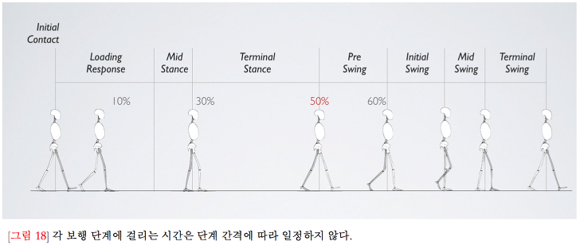
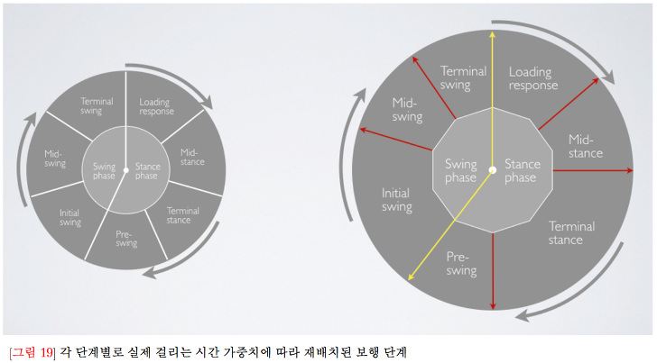
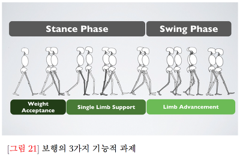

<게슈탈트 시리즈 원작은 이문규 선생님께 있다는 것을 미리 알립니다.>
전편과 이어집니다.
<게슈탈트 관점으로 보는 걷기>
앞서 인간 걷기를 이해하기 위한 이론적 모형 중 척추엔진 모형을 말할 때 언급한 것 처럼, 임상에서 일반적으로 채택하는 이론적 모형은 보행자 이론입니다.
보행자 이론에서는 한 스트라이드Stride 즉, 한 걸음 동안 다리에서 일어나는 주요 운동학적 또는 역학적 사건을 토대로 구간을 나눕니다.
스트라이드 동안 일어나는 주요 사건들은 계속 반복되기 때문에, 이 스트라이드를 사이클cycle 또는 주기라고도 합니다.
한 사이클의 단계를 구분할 때 가장 먼저 사용되는 기준은 발이 바닥에 닿아 있느냐, 떨어져 있느냐이죠. 즉 바닥에 닿아있으면 Stance입각기 , 떠있으면 Swing
유각기가 되는겁니다.
입각기는 위치에따라 Initial Contact;IC , Loading Response;LR , Mid Stance;MST , Terminal Stance;TST ,
Preswing;PSW 단계로 구분합니다.
유각기는 Initial Swing;ISW , MidSwing;MSW , Terminal Swing;TSW 단게로 나뉩니다.
인간 걷기의 효율성 때문에 한 사이클 동안 하지 관절의 변화는 시상면에서 가장 큽니다. 그렇다보니 보행 문제를 파악하고 해결할 때도 시상면의 관절운동학적 정보가 기본
이 되는 경우가 많습니다. 서두에서 지적한 문제, 즉 인간의 움직임은 전체적인데 부분의 정보만 가지고 전체를 이해하고 수정하려는 오류를 이 부분에서도 느낄 수 있습니다.
###게슈탈트 관점의 보행 주기와 단계
우리는 두 다리로 걷습니다. 다리만 움직이고 몸통과 팔은 버스 승객처럼 수동적으로 실려 가는 것이 아니라, 다리 이외의 나머지 분절도 걷기라는 움직임에 능동적으로 참여하여
운동과 위치에너지를 만드는 적극적 참여자입니다. 동아리원분들도 움직임에 관한 게슈탈트 관점이 타당하다고 생각하신다면 결론또한 저랑 비슷하실 겁니다.
'전체'로 분석하고 '전체'로 접근하자는 것 입니다. 이 말을 '전체로만' 접근하자는 말로 오해하지 않기를 바랍니다.
###직선 사이클을 원으로

###단계별 시간 가중치
위 사진처럼 보행은 시계처럼 돌아갑니다. 그런데 원으로만 표현되어 있지 큰 문제점을 가지고 있습니다. "바로 각 단계가 차지하는 시간적 점유공간 입니다."

위 사진으로는 각 단계가 시간점유를 어느 비율로 하는지 상대적으로 비교해볼 수 있습니다.

걸음은 두 발로 걷습니다. 한 다리가 특정 단계에 있을 때 다른 쪽 다리도 보행주기/사이클 중 어느 단계를 거칩니다.
예컨대, 한쪽 다리가 MST단계를 거치면 다른 다리는 MSW단계를 지납니다. 한쪽 다리가 TST단계를 지나 PSW단계로 넘어가면 다른 쪽 다리는 IC
단계에서 LR단계로 진행됩니다. 이렇게 당연하게도 양쪽 다리는 상호보완적으로 몸에 가해지는 역학적 부하와 운동학적 과제를 처리합니다.
한쪽 다리가 IC-LR단계를 지난다고 할 때 이것을 가능하게 하는 것은 해당 다리 관절과 근육이 아니라 TST-PSW단계에 있는 반대쪽 다리입니다.
사실 어떤 면에서는 반대쪽 다리가 더 중요한 역할을 한다 해도 과언이 아닙니다. 보이는게 전부가 아닌셈이죠.
한 사이클 동안, 즉 한 발의 뒤꿈치가 닿아서 다시 그 발의 뒤꿈치가 닿을 때 까지 우리 몸은 3가지 과제를 처리해야 합니다. 우리가 안전하게, 그리고
효율적으로 한 장소에서 다른 장소로 몸을 이동하기 위해서는 기능적으로 의미있는 과제들을 수행해야 합니다.
WA(Weight Acceptance; 부하허용) , SLS(Single limb support) , LA(limb advancement) 입니다.
WA 는 중력에 의해 발생하는 체중부하와 그로 인한 지면반발력을 수용하는 과제입니다. 유각기 단계가 끝나고 뒤쪽 다리에 실려 있던 체중이 새로운 다리로 옮겨와야 하는데,
이때 이 과제를 수행합니다. SLS는 한 발로 서있는 과제입니다. 전방으로 몸을 이동하려면 한 발로 서는 과정이 필요합니다. 몸이 가장 불안한 시점입니다.
LA는 SLS과제 구간이 끝날 무렵에는 반대쪽 다리로 체중이 옮겨 가 있으므로 이제 다리를 유각시켜 앞으로 보낼 수 있게 됩니다. LA는 다리로 앞으로 이동하는 일을 처리해야 합니다.
특히 SLS와 LA는 상호교환 관계에 있습니다. 한 다리가 SLS과제를 처리할 때 반대쪽 다리는 LA과제를 처리하며, 그 뒤를 이어 반대쪽 다리가 SLS 과제를 맡아주는 동안 LA과제를
처리하기 때문입니다. WA과제는 스위치 역할을 합니다. SLS,LA 과제 사이에서 각 다리의 임무 교대가 일어나는 시점이 바로 WA가 처리되는 단계입니다.

다음편에서 계속